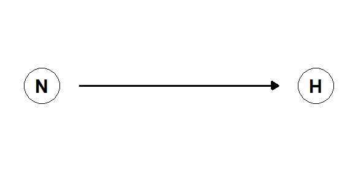

5 Fra sammenheng til kausalitet
Samtidig som vi vet at noen sammenhenger er spuriøse vet vi også at noen ting påvirker andre ting, det finnes kausalsammenhenger. I et forsøk undersøker vi hvordan en ny medisin påvirker blodtrykket. En gruppe forsøksdeltakere blir tilfeldig inndelt i to grupper. Deltakere i den ene gruppen får den nye medisinen og deltakere i den andre gruppen får plasebo. Inndeling av deltakere i gruppene er skjult for deltakere og forskere. I etterkant av forsøket måler vi blodtrykk og kan konstatere at deltakere som fått medisinen har lavere blodtrykk sammenlignet med plasebogruppen. Forsøket inneholder noen komponenter som gjør at vi kan si at det finnes en kausal sammenheng mellom det å ta medisinen og det å få lavere blodtrykk. Hvis vi hadde muligheten å forandre på en variabel for å siden måle utfallet i en annen variabel, under kontrollerte forhold så kan vi si at det finnes (eller ikke) en kausal sammenheng. Det å forandre en variabel (f.eks. konsentrasjonen av et medikament i blodet) kan kalles for å gjøre en intervensjon.
I mange sammenhenger har vi ikke mulighet å forandre variabler ved å lage intervensjoner. Det kan for eksempel finnes etiske eller praktiske årsaker til dette. Men vi har fortsatt mulighet å undersøke kausale sammenhenger. Som i eksemplet med medisin for lavere blodtrykk over så krever det noen antagelser. I et forsøk hvor vi intervenerer kan antagelser inkludere at forsøksdeltakere blir tilfeldig tildelt en gruppe og at forskere ikke vet om hvilken pasient eller forsøksdeltakere som får den aktive behandlingen eller medisinen. Hvis disse antakelsene er sanne så kan vi med stor sikkerhet si at medisinen påvirket blodtrykket. I forskningsstudier hvor vi ikke har mulighet å intervenere har vi fortsatt mulighet å «kontrollere» for variabler som kan påvirke sammenhengen mellom to variabler som vi er interessert i. Vi kan identifisere variabler som vi bør kontrollere for ved hjelp av grafiske modeller. Disse modellene kan også gi innsikt i når vi ikke kan si noe om en kausalsammenheng
I denne modulen skal vi snakke om kausal inferens, hvordan kan vi si noe om hvordan en variabel påvirker en annen variabel.
5.1 Eksperiment og kvasieksperiment
Et eksperiment kan brukes til å sammenligne to typer av intervensjoner. Vi sammenligner disse intervensjonene i en definert gruppe. Denne gruppen, eller populasjonen, kan som et eksempel være idrettsutøvere, og intervensjonene kan være to forskjellige treningsprogrammer hvor et program er et nytt program (N) og det andre er hva man vanligvis bruker, en slags kontrollprogram (K). Vi ønsker med vårt eksperiment å si noe om effekten av N på gruppen idrettsutøvere. Vi rekrutterer en gruppe idrettsutøvere og deler inn dem i to grupper, N og K.
For å gjøre sammenligningen bestemmer vi en utfallsvariabel, i eksemplet passer det fint å måle løpehastighet i en 3000-m test. Vi lar utøverne løpe testen i forkant av studien, ved tid 1 (\(t_1\)), og etter studien, ved tid 2 (\(t_2\)). Vi kan nå beregne en forandringsskår (\(\delta\)). Hvor mye forandret seg hvert enkelt individ fra \(t_1\) til \(t_2\)?
\[\Delta = t_2 – t_1\]
I neste steg kan vi beregne effekten av N, det nye treningsprogrammet. For å beregne denne så trekker vi ifra forandringen i K (\(\Delta_K\)) fra effekten av N (\(\Delta_N\)), denne beregning gir oss den gjennomsnittlige intervensjonseffekten (GIE) av å gjennomføre N, sammenlignet med et kontrollprogram (K).
\[ \Delta_N - \Delta_K = \text{GIE}\]
For å si at den estimerte GIE er den kausale effekten av å gjennomføre N kreves noen grep og antagelser. Når vi delte inn deltakere i studien så må vi ta grep for å gi hvert deltakere samme sannsynlighet å ende opp i hver gruppe. Vi sikkerstille dette ved å randomisere forsøket. I et randomisert forsøk bruker man vanligvis et dataprogram som tilfeldig tildeler gruppetilhørighet til hvert individ. Inndelingen av gruppene påvirkes ikke forskerne, deltakerne eller andre faktorer som samtidig kan påvirke resultatene. Dette er en aspekt av forsøket som gjør at vi kan kalle det for et eksperiment. Et nærbeslektet design er en kvasieksperimentell studie. I en slik studie har noe ytterligere påvirket gruppeinndelingen og dermed påvirket effekten som er utfallet av studien.
En annen effekt som kan påvirke resultatene i studien er om den tilfeldige inndelingen i grupper gir en overvekt av dårlig trente utøvere i den ene gruppen. En dårlig trent individ kan forventes svare bedre på trening og hvis alle disse er samlet i en gruppe forsvinner eller forsterkes effekten av intervensjonen. For å unngå en slik situasjon kan vi gjennomføre en oppdeling av deltakerne i forkant av intervensjonen basert på noen karakteristikk som vi ser som viktige for utfallet i studien. Oppdelingen kan gi oss par som er sammenligningsbare, randomiseringen skjer seden parvis hvor hvert individ i hvert par har samme sannsynlighet for å ende opp i hver enkelt gruppe.
Når en gruppe deltakere i et forskningsprosjekt er tilstrekkelig stor er sannsynligheten liten for å få ubalanserte grupper med hensyn til utfallet i studien som i eksemplet er treningseffekten. Vi veit ikke heller den forventede effekten i hvert individ noe som gjør matching vanskelig. Når vi fordeler deltakere på intervensjonsgruppene ved hjelp av en tilfeldig prosess så gjør vi også at kilder til systematisk variasjon blir tilfeldig fordelt, noe som gir mulighet å si at effekt av N er kausal.